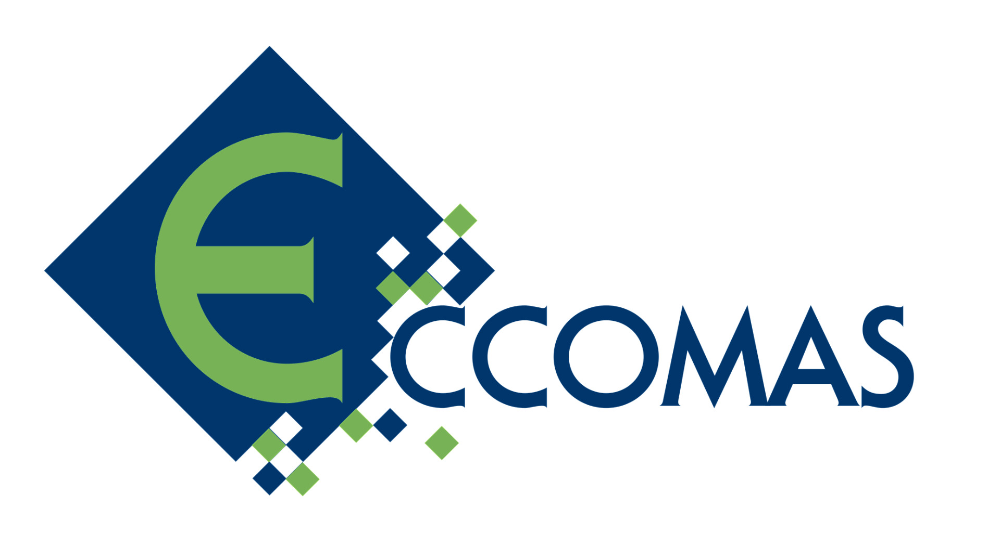

| B oletín electrónico de la SEMA |
| Número 31, diciembre 2022 |


| Boletín electrónico de la SEMA – Número 31, diciembre 2022 | |
| ISSN 2659-4129 | |
| © | Sociedad Española de Matemática Aplicada – SEMA |
| © | De los autores |
| https://www.sema.org.es/ |
Diseño de la portada: FOG.
Ilustración de la portada: Apilamiento de cincuenta cuadrados de lado los inversos de los primeros cincuenta números naturales dentro de un rectángulo de base π2∕6 y altura la unidad (sección 6).
Editorial Palabras del presidente Hacerse socio de la SEMA es muy sencillo, y barato
Estimados socios, nos adentramos en el mes de diciembre de 2022 y nos congratulamos de que el año finalice con un nuevo número de nuestro Boletín electrónico.
En efecto, nuestro Boletín tiene una deuda con algunas actividades muy relevantes que, en relación con nuestra Sociedad, han tenido lugar en el año 2022. Entre ellas, cabe destacar el espléndido XXVII CEDYA / XVII CMA que tuvo lugar en Zaragoza, en el mes de julio. Nuestros compañeros José Luis Gracia y Luis Rández, profesores de la Universidad de Zaragoza y miembros del comité organizador de este evento, nos ofrecen una reseña en la que se recogen algunas de las actividades más relevantes que vivimos en esos inolvidables días en la ciudad del Ebro.
Además, en junio se celebró en Málaga el XVIII International Conference on Hyperbolic Problems. Theory Numerics and Applications (HYP2022). Un congreso que reúne desde hace décadas a científicos interesados en los aspectos teóricos, aplicados y computacionales de las ecuaciones en derivadas parciales hiperbólicas. El comité organizador de este evento ha tenido a bien escribir una detallada reseña que nos alegra publicar.
En la sección dedicada a las noticias hacemos eco de la elección de dos nuevos miembros en el Consejo Ejecutivo de nuestra Sociedad: Luca Fanelli, de la Universidad del País Vasco y Begoña Cantó Colomina, de la Universidad Politécnica de Valencia. Recordamos el nombramiento de tres nuevos correspondientes en la Sección de Matemáticas de la Real Academia de Ciencias Exactas, Físicas y Naturales de España. Presentamos una breve reseña de la quinta edición del Concurso de Modelización Matemática del Instituto de Matemática Interdisciplinar (IMI) así como de otras buenas noticias, como la adjudicación de Becas Leonardo a Investigadores y Creadores Culturales 2022 de la Fundación BBVA o el logro del BCAM de su tercera acreditación de excelencia «Severo Ochoa». También se incluye un artículo sobre la iniciativa «Mujeres de Ciencia», de la Fundación Real Academia de Ciencias y una reseña de la Jornada sobre Doctorado Industrial realizada en octubre en la Universidad de Sevilla.
Finalmente y como es usual, incluimos una sección con anuncios que pueden ser de interés para nuestros socios y terminamos presentando los contenidos del SEMA Journal, en concreto, de los números 3 y 4 del volumen 79.
Confiamos en que estos contenidos sean del interés y del agrado de los socios de la SEMA, y os deseamos a todos unas felices fiestas, así como un próspero y matemático año 2023.
Saludos cordiales,
Francisco Ortegón Gallego
José Rafael Rodríguez Galván
Puerto Real (Cádiz), 5 de diciembre de 2022

Estimados colegas:
Aprovecho nuestro último Boletín del año 2022 para hacer un pequeño balance de las actividades realizadas durante este ejercicio.
Como es habitual en cada año, hemos gestionado la convocatoria del premio SEMA «Antonio Valle» al joven investigador y al mejor artículo de SEMA Journal, así como el proceso de selección de la tesis que nos representa en los ECCOMAS Phd thesis awards. El pasado mes de julio celebramos XXVII CEDYA - XVII CMA en la Universidad de Zaragoza. Quiero expresar mi más sincero agradecimiento a los colegas del Instituto Universitario de Matemáticas y Aplicaciones de la Universidad de Zaragoza (IUMA), y en particular a Luis Rández y a José Luis Gracia todo el buen trabajo realizado que ha hecho posible que el pasado CEDYA/CMA haya sido todo un éxito.
Este año que pronto cerramos ha traído buenas noticias para la nuestra comunidad: nuestro colega Jesús M. Sanz Serna fue galardonado con el Premio Jaume I en Investigación Básica 2022; Luis Vega recibió el Premio Nacional de Investigación «Julio Rey Pastor» 2021, en el área de matemáticas y tecnologías de la información; José Antonio Carillo ha sido seleccionado como conferenciante invitado en el próximo ICIAM 2023, o el BCAM ha renovado su acreditación de excelencia «Severo Ochoa». Mi más sincera enhorabuena a todos ellos. Extiendo esta felicitación a los profesores Verónica Bolón Canedo, Alberto Enciso Carrasco y Xavier Ros Otón por su incorporación como correspondientes en la Sección de Matemáticas de la Real Academia de Ciencias Exactas, Físicas y Naturales de España.
Quiero agradecer como presidente y socio de la SEMA el trabajo y dedicación de nuestro secretario, Fernando de Terán Vergara, que ha desempeñado esta labor durante los últimos seis años, y que cesó en su cargo el pasado julio. Fernando ha jugado un papel esencial en el Consejo Ejecutivo de nuestra Sociedad. Fernando es una persona entusiasta, trabajadora y comprometida con nuestra Sociedad, a la que le tengo que agradecer sus consejos durante todo este tiempo. También quiero agradecer la labor realizada por Arghir Zarnescu como miembro del Consejo Ejecutivo en los últimos tres años y dar la bienvenida a Begoña Cantó Colomina y Luca Fanelli como nuevos consejeros de la SEMA.
Durante este ejercicio tenemos nuevos retos, como la organización de la XX Escuela Jacques-Louis Lions Hispano Francesa sobre Simulación Numérica en Física e Ingeniería que se celebrará en Barcelona y de la que pronto tendréis información más precisa, o la mejora continua del posicionamiento de SEMA Journal, o el diseño de un espacio en nuestro servicio web que ayude a la organización de los eventos que organizamos desde la propia SEMA o aquellos que organicen nuestros socios.
Os recuerdo que la SEMA quiere servir de altavoz para todos los eventos relevantes relacionados con la Matemática Aplicada e Industrial que se organicen en España. Desde aquí os animo a que nos trasmitáis toda la información que estiméis oportuna para difundirla entre nuestros socios. Es nuestra intención destinar una parte de nuestro presupuesto al mecenazgo de estos eventos, en la medida de nuestras posibilidades económicas.
Os deseo un feliz y próspero año 2023.
Un cordial saludo.
| Manuel Jesús Castro Díaz |
| Presidente de la SEMA |
| Málaga, 3 de diciembre de 2022 |
Zaragoza, 18-22 julio 2022
J. L. Gracia, L. Rández
IUMA - Universidad de Zaragoza
____


Durante los días del 18 al 22 de julio se celebró en Zaragoza el XXVII Congreso de Ecuaciones Diferenciales y Aplicaciones / XVII Congreso de Matemática Aplicada, congreso bienal de nuestra Sociedad. Este congreso fue organizado por el Instituto Universitario de Matemáticas y Aplicaciones de la Universidad de Zaragoza (IUMA) y tuvo su sede en la Facultad de Medicina del campus San Francisco. La organización del congreso estuvo diseñada de forma híbrida y de los 320 asistentes, 290 fueron en forma presencial.
El Comité Científico, presidido por Juan Ignacio Montijano de la Universidad de Zaragoza, y formado por: José Carlos Bellido (Universidad de Castilla-La Mancha), Raimund Bürger (Universidad de Concepción, Chile), Rosa Donat (Universidad de Valencia), Michael Dumbser (University of Trento, Italia), Ernesto Estrada (CSIC-Mallorca), Natalia Kopteva (University of Limerick, Irlanda), Tere Martínez-Seara (Universidad Politécnica de Cataluña), Juan Manuel Peña (Universidad de Zaragoza) y Luz de Teresa (Universidad Nacional Autónoma de México), seleccionó ocho conferenciantes plenarios, dieciocho minisimposios, y ocho sesiones especiales además de la clásica sesión de pósteres.
La sede de la sesión del día central del congreso fue el edificio Paraninfo de la Universidad de Zaragoza, donde se entregó el premio SEMA «Antonio Valle» al Joven Investigador 2022 a David Gómez Castro y Marc Jornet Sanz así como el premio al mejor artículo del SEMA Journal en 2021 a Armengol Gasull. Por último, se entregó la nominación al Premio ECCOMAS a la Mejor Tesis Doctoral de 2021 sobre Métodos Computacionales en Ciencias Aplicadas e Ingeniería a Ernesto Pimentel García.
Los conferenciantes plenarios de esta edición del CEDYA/CMA fueron:
Roberto Barrio (Universidad de Zaragoza)
Albert Cohen (Laboratoire Jacques-Louis Lions, Sorbonne Université, Paris, Francia)
Emmanuil Georgoulis (University of Leicester, Reino Unido / NTU Athens, Grecia)
Volker Mehrmann (TU Berlin, Alemania)
Julia Novo (Universidad Autónoma de Madrid)
Francisco Periago (Universidad Politécnica de Cartagena)
Carmen Rodrigo (Universidad de Zaragoza)
Giovanni Russo (University of Catania, Italia)
Los minisimposios y las sesiones especiales se celebraron en sesiones paralelas, con un máximo de ocho. En cada sesión hubo participantes tanto presenciales como por videoconferencia. Se celebraron las siguientes sesiones especiales:
Partial Differential Equations
Dynamical Systems - Ordinary Differential Equations
Numerical Analysis and Simulation
Numerical Linear Algebra
Optimal Control - Inverse Problems
Applied Mathematics to Industry, Social Sciences and Biology
Mathematical Education
Other: Scientific Calculus, Approximation Theory, Discrete Mathematics
y los dieciocho minisimposios:
Dynamical Systems: Theory and Applications
Numerical Approximation of Hyperbolic PDE Systems and their Applications
PDE Models in Biology
Optimal Control and Inverse Problems
Iterative Processes and Non Linear Equations
ALAMA: Linear Algebra, Matrix Analysis and Applications
New Trends on the 1-Laplacian
Progress on Time Integrators for ODE
Orthogonal Polynomials, Special Functions and Approximation Theory
Success Stories between Academia and Industry at CITMAga
Reduced Order Modeling Applied to Architecture and Engineering
Numerical Methods for Models in Partial Differential Equations
Efficient Solvers for Large Sparse Linear Systems
Nonlinear Analysis in Partial Differential Equations
Industrial Mathematics at the Centre de Recerca Matemática
Partial Differential Equations and Homogenization
Mathematics in Industry and Organizations
Geometric Flows and PDEs in Geometry
El Comité Organizador local estuvo formado por Chelo Ferreira, José Luis Gracia, Etelvina Javierre, Eduardo Martínez, Pedro J. Miana, Ester Pérez, Luis Rández, Teresa Sánchez y Raquel Villacampa, todos pertenecientes al IUMA.
Queremos agradecer de forma cariñosa a los voluntarios, estudiantes del grado de Matemáticas, del programa conjunto en Física y Matemáticas, y estudiantes de doctorado de la Universidad de Zaragoza, que en todo momento estuvieron pendientes que todo funcionara correctamente.
Puede consultarse la información referente al congreso en la página web http://cedya2022.es. En la dirección
hay fotografías del XXVII CEDYA / XVII CMA.
Málaga, junio 20-24, 2022
https://hyp2022.com/

Desde el 20 al 24 de junio se celebró en la Universidad de Málaga el XVIII International Conference on Hyperbolic Problems. Theory Numerics and Applications (HYP2022). HYP2022 fue organizado por el grupo EDANYA (Ecuaciones Diferenciales, Análisis Numérico y Aplicaciones) de la Universidad de Málaga y tuvo su sede en la Escuela Técnica Superior de Ingeniería Informática y la Escuela Técnica Superior de Telecomunicaciones de la Universidad de Málaga.
El principal objetivo de los congresos HYP es el de reunir a científicos interesados en los aspectos teóricos, aplicados y computacionales de las ecuaciones en derivadas parciales hiperbólicas (sistemas de leyes de conservación hiperbólicas, ecuaciones de ondas, etc.) y en modelos matemáticos relacionados (EDP de tipo mixto, ecuaciones cinéticas, modelos no locales o discretos, etc.).
La primera edición de esta serie de congresos se celebró en 1986 en St. Etienne (Francia) y desde entonces se ha organizado bianualmente en diferentes lugares: las últimas ediciones se celebraron en 2018 en Penn State (EEUU), en 2016 en Aachen (Alemania), en 2014 en Río de Janeiro (Brasil), en 2012 en Padua (Italia), en 2010 en Beijing (China), en 2008 en College Park (EEUU) y en 2006 en Lyon (Francia). Estaba previsto que la edición de 2020 tuviera lugar en Málaga, como evento satélite del congreso ICIAM 2019, pero la pandemia covid-19 obligó a su aplazamiento hasta 2022. Para evitar un período de 6 años sin ninguna actividad relacionada con esta serie de congresos, en julio de 2021 la Universidad de Málaga organizó la jornada online HYP2020/21, que contó con la asistencia de unos 500 investigadores de todo el mundo.
Para asegurar la consecución de los objetivos de la serie, en esta edición se ha contado con un Comité Científico de primer nivel, compuesto por los profesores Yann Brenier (Escuela Politécnica de París, Francia), Alberto Bressan (Universidad de Penn State, EEUU), José Antonio Carrillo (Universidad de Oxford, Reino Unido), Gui-Qiang Chen (Universidad de Oxford, Reino Unido), Bruno Després (Universidad de la Sorbona, Francia), Rosa Donat (Universidad de Valencia, España), Donatella Donatelli (Universidad de L’Aquila, Italia), Michael Dumbser (Universidad de Trento, Italia), Eduard Feireisl (Instituto de Matemáticas de la Academia de Ciencias de la República Checa), Raphaèle Herbin (Universidad de Marsella, Francia), Helge Holden (Universidad Noruega de Ciencia y Tecnología, Noruega), Christian Klingenberg (Universidad de Würzburg, Alemania), Shi Jin (Universidad de Shanghai Jiao Tong, China), Philippe G. LeFloch (Universidad de la Sorbona, Francia), Carlos Parés (Universidad de Málaga, España), Eric Sonnendrucker (Universidad Técnica de Munich, Alemania), Eitan Tadmor (Universidad de Maryland, EEUU), Chi-Wang Shu (Universidad de Brown, EEUU), Endre Süli (Universidad de Oxford, Reino Unido), Michael Westdickenberg (Universidad RWTH de Aquisgrán, Alemania). El Comité Científico cerró una lista de conferenciantes plenarios e invitados de prestigio internacional reconocido en el ámbito del estudio de las ecuaciones hiperbólicas y sus aplicaciones. El Comité Organizador Local ha estado integrado por los miembros del Grupo EDANYA de la Universidad de Málaga ( https://www.uma.es/edanya/), dirigido por el profesor Carlos Parés Madroñal, quien ha actuado como Presidente de dicho Comité. La página web https://hyp2022.com recoge toda la información sobre el evento.
La apertura del congreso tuvo lugar en el salón de actos de las Escuelas Superiores de Ingeniería Informática y de Telecomunicaciones de la Universidad de Málaga. El congreso fue inaugurado por D. Ernesto Pimentel, Vicerrector de Estudios de la UMA, a quien acompañaban en la mesa presidencial Rafael Godoy, director de la ETSI de Telecomunicaciones, José María Álvarez, subdirector de la ETSI Informática, así como el responsable del Comité Organizador, el profesor Carlos Parés.
En el transcurso del congreso se presentaron 5 conferencias plenarias y 8 semiplenarias, a las que hay que unir la conferencia asociada al Premio Peter Lax y la “Conferencia James Glimm”, 145 comunicaciones orales, organizadas en 65 sesiones, y 22 pósteres, destacando el excelente nivel científico y el elevado número de jóvenes investigadores entre los autores. Se promovió la participación de éstos mediante una serie de becas que cubrían la inscripción al evento (que incluía la participación en el mismo y documentación asociada, las pausas-café, comidas y actos sociales). En total se contó con 283 participantes, de los cuales 86 eran estudiantes que están realizando su tesis doctoral, de 27 países diferentes: 48 participantes de Alemania, 42 de Italia, 38 de España, 38 de Francia y 31 de Estados Unidos, entre otros.
A lo largo de la semana, cada jornada comenzaba con una conferencia plenaria y dos semiplenarias que se celebraban en paralelo, seguidas por la pausa café. A continuación, se presentaban 24 comunicaciones orales de veinte minutos cada una de ellas, organizadas en 8 sesiones, 4 de ellas en paralelo. En la sesión de tarde de lunes, martes y jueves se presentaron otras 24 comunicaciones orales, organizadas de forma similar a las de la mañana y separadas por una pausa-café. El martes y jueves por la tarde se celebraron además las sesiones de pósteres, una vez finalizadas las comunicaciones orales.
El miércoles por la tarde tuvo lugar una sesión especial que contó con la participación destacada del profesor James Glimm, quien presentó la comunicación Maximum Entropy Production Rate, y la entrega de los galardones correspondientes al II Premio Peter Lax y la II Conferencia James Glimm, así como las conferencias impartidas por ambos galardonados. La jornada se cerró con una cena de gala celebrada en el restaurante «Balneario Baños del Carmen», en la bahía de Málaga.
El Comité Científico del HYP2020 decidió instituir el «Premio Peter Lax» en honor a las contribuciones fundamentales de este insigne matemático, que sentaron las bases de la teoría y la computación modernas en el área de las leyes de conservación hiperbólicas. Esta distinción se otorga a un investigador joven en cada Conferencia HYP. El premiado es invitado a dar una conferencia distinguida en el congreso. El primer premio Lax fue concedido en 2021 a Jacob Bedrossian (U. Maryland) en la jornada HYP2020/21. Tras un cuidadoso proceso de selección, el Comité Científico de HYP2022 decidió distinguir con el segundo Premio Peter Lax a Maria Colombo (EPFL, Suiza), que impartió la conferencia Non-uniqueness of Leray solutions of the forced Navier-Stokes equations.
Junto al Premio Peter Lax, el Comité Científico del HYP2020 también decidió instituir una conferencia especial denominada «Conferencia James Glimm» en honor a sus contribuciones fundamentales y originales en el área de las leyes de conservación hiperbólica y su aproximación numérica. Un investigador senior de reconocido prestigio internacional es seleccionado por el comité científico para impartir dicha conferencia. La primera Conferencia James Glimm fue impartida por el profesor Constantine Dafermos (Brown U.) en la jornada HYP2020/21. El segundo galardonado con esta distinción fue Benoît Perthame (Universidad de la Sorbona, Francia), que impartió la conferencia Structured equations in biology; entropy and Monge-Kantorovich distance.
El Comité Científico decidió conceder un premio a las mejores contribuciones orales impartidas por los estudiantes de doctorado. Para ello se contó con la colaboración de la editorial Springer, que ha esponsorizado estos premios. En esta edición los galardonados han sido los siguientes:
Aspectos teóricos: William Golding (University of Texas at Austin, USA) con la comunicación titulada Uniqueness of shock waves under small perturbations for the Isentropic Euler Equations.
Aspectos Numéricos: Alessia del Grosso (Université de Versailles Saint-Quentin-en-Yvelines, France) con la comunicación titulada Well-balanced implicit-explicit Lagrange-projection scheme for two-layer shallow water equations.
Aplicaciones: Kathrin Hellmuth (University of Würzburg, Germany) con la comunicación titulada Kinetic equations and inverse problems: an application to chemotaxis.
Los galardonados recibieron un diploma y libros de la editorial Springer por un valor de 150 euros, entregados por Dra. Francesca Bonadei, editora ejecutiva de Springer.
Eduard Feireisl (Instituto de Matemáticas de la Academia de Ciencias de la República Checa): Euler equations in fluid dynamics: Good and bad news.
Jan S. Hesthaven (EPFL de Lausana, Suiza): On the use of artificial neural networks when solving conservation laws.
Denis Serre (ENS de Lyon, Francia) : Compensated Integrability and Conservation Laws.
Eleuterio F. Toro (Universidad de Trento, Italia): The ADER path to constructing very high-order schemes for approximating hyperbolic equations.
Tong Yang (Universidad de Hong Kong, China): Stability Analysis on Compressible Navier-Stokes Equations with Strong Boundary Layer.
Benjamin Gess (Universidad de Bielefeld, Alemania): Non-equilibrium large deviations and parabolic-hyperbolic PDE with irregular drift.
Kenneth H. Karlsen (Universidad de Oslo, Noruega): Stochastic conservation laws: some homogenisation and singular limit problems.
Qin Li (Universidad de Wisconsin-Madison, EEUU): Low rank structure in forward and inverse kinetic theory.
Raphaël Loubère (Universidad de Burdeos, Francia): Entropy stable and positivity preserving innovative Godunov-type schemes for multidimensional hyperbolic systems of conservation laws on unstructured grid – Bridging Lagrangian and Eulerian frameworks.
Giovanni Russo (Universidad de Catania, Italia): Asymptotic preserving well-balanced schemes for hyperbolic systems of balance laws.
Konstantina Trivisa (Universidad de Maryland, EEUU): Analysis of models of superfluidity.
Emil Wiedemann (Universidad de Ulm, Alemania): Weak and measure-valued solutions of the Euler equations.
Yao Yao (Universidad Tecnológica de Georgia, EEUU): Small scale formations in the incompressible porous media equation.
Las comunicaciones y pósteres presentados abarcaron todos los aspectos de la temática de los congresos HYP: teoría, análisis numérico y aplicaciones de las ecuaciones en derivadas parciales hiperbólicas. Cabe destacar la alta calidad científica de las comunicaciones orales, algunas de ellas presentadas por grandes figuras del estudio de las ecuaciones hiperbólicas como el Prof. Philip L. Roe, que aún sigue activo a sus 84 años, o el Prof. James Glimm. Destacamos igualmente el gran número de comunicaciones presentadas por estudiantes de doctorado, 66 de las 145 comunicaciones orales.
La cantidad de participantes en el congreso, y la buena disposición de todos ellos favorecía el diálogo fluido tras cada presentación, diálogo que se extendía a las pausas para el café y la comida y, por supuesto, a las sesiones de pósteres.
El domingo por la tarde previo al comienzo del congreso tuvo lugar el cocktail de bienvenida en el restaurante Gutiérrez Puerto, situado en la zona del Palmeral de las Sorpresas del puerto de Málaga.
La sesión especial del miércoles por la tarde terminó antes que la de los demás días del congreso para dar a los asistentes la posibilidad de realizar una visita por el centro de la ciudad, donde se encuentran situados, entre otros monumentos, la catedral, el museo episcopal, la casa natal de Picasso, los museos Carmen Thyssen y Picasso, el Teatro Romano, la Alcazaba, el castillo de Gibralfaro, etc. La jornada culminó con una cena en el restaurante Balneario Baños del Carmen.
El último día del encuentro se anunció que la próxima edición del congreso en 2024 tendrá lugar en Shanghái (China).
_____________________________________ ◇◇◇_____________________
Fernando de Terán Vergara
Universidad Carlos III de Madrid
____
La Asamblea General Ordinaria de la SEMA tuvo lugar el pasado 20 de julio de 2022, en el Aula Magna del Paraninfo de la Universidad de Zaragoza, entre las 12:57h y las 14:10h. Fue presidida por Manuel J. Castro Díaz, presidente de la SEMA y actuó como secretario Fernando de Terán Vergara, secretario de la SEMA.
El informe del presidente incluyó, entre otros, los siguientes asuntos:
En junio se liquidó la sociedad creada para la gestión del congreso ICIAM2019, y se transfirió a la SEMA el saldo positivo resultante del congreso. Agradeció el enorme esfuerzo a todo el equipo organizativo del congreso, y en especial a Tomás Chacón (presidente del comité ejecutivo del ICIAM2019) y a Rosa Donat (expresidenta de la SEMA).
Por decisión del Consejo Ejecutivo de la SEMA, se rescindió el contrato con Grupo Pacífico, la empresa que venía haciéndose cargo de la secretaría técnica de nuestra Sociedad, y se han contratado los servicios de la empresa t2V. Esta empresa se encargará tanto de la secretaría técnica como de la gestión de la página web (al igual que hacía Grupo Pacífico).
Antes de la asamblea, se han entregado los premios SEMA correspondientes al año 2021. Los premios y premiados han sido los siguientes:
Premio SEMA «Antonio Valle» al joven investigador 2022: David Gómez Castro (Universidad Complutense de Madrid) y Marc Jornet Sanz (Universitat de València).
Premio al mejor artículo de SEMA Journal 2021: Armengol Gasull, de la Universitat Autònoma de Barcelona y el CRM, por el artículo Some open problems in low dimensional dynamical systems, publicado en SEMA Journal, volume 78, pages 233–269 (2021).
Tesis seleccionada por la SEMA para el ECCOMAS award for the two best PhD theses in 2021 on computational Methods in Applied Sciences and Engineering: Ernesto Pimentel García (UMA), por la tesis titulada Numerical analysis of some nonlinear hyperbolic systems of Partial Differential Equations arising from Fluid Mechanics.
Los resultados del Citescore de la base de datos Scopus para el SEMA Journal, en la que está incluida la revista, son alentadores: se ha pasado de una posición 264/568 en 2020 a 241/590 en 2021 (en la categoría Mathematics). La publicación en abierto de los números especiales de congresos (como el CEDYA/CMA 2021 o el ICIAM2019) ha ayudado mucho en este sentido. El objetivo sigue siendo incluir la revista en el JCR.
El presidente informó, asimismo, de las novedades relevantes en las distintas asociaciones, sociedades o entidades de las que nuestra Sociedad forma parte o con las que está estrechamente relacionada (como la COSCE, el CEMat, la IMU, la EMS o el ICIAM).
También recordó que el próximo año se celebrará el ICIAM2023 en Tokio, donde el socio de la SEMA José Antonio Carrillo (a quien hizo pública su enhorabuena) será conferenciante invitado. Igualmente, transmitió su enhorabuena a los socios Luis Vega, por haber sido galardonado con el Premio Nacional de Investigación Julio Rey Pastor 2021, Jesús María Sanz Serna, por haber recibido el Premio Rei Jaume I en investigación básica 2022, y Martina Conte, por haber recibido el premio Reinhart Heinrich a la mejor tesis doctoral en 2021. Finalmente, agradeció su enorme esfuerzo al comité organizador del CEDYA/CMA 2022.
María Luz Muñoz, tesorera de la SEMA, presentó el balance económico de la Sociedad y el presupuesto para el próximo curso.
A continuación, se procedió a la votación a la Presidencia y a tres vacantes del Consejo Ejecutivo. Debido a que la asamblea tuvo que concluirse de manera precipitada por motivos de infraestructura, el recuento se llevó a cabo posteriormente. Se emitieron un total de 87 votos y cada candidato obtuvo el siguiente número de votos:
Candidatos a la Presidencia: Manuel J. Castro Díaz: 85 votos a favor.
Candidatos al Consejo Ejecutivo:
Esther Barrabés Vera: 83 votos a favor
Begoña Cantó Colomina: 82 votos a favor
Luca Fanelli: 78 votos a favor
María Luisa Rapún Banzo: 81 votos a favor
Por tanto, los cuatro candidatos al Consejo Ejecutivo han sido nombrados miembros de dicho consejo, por un periodo de tres años, y Manuel J. Castro Díaz ha sido nombrado Presidente de la Sociedad por un nuevo periodo de dos años.
En la última asamblea de la SEMA, celebrada el día 20 de julio de 2022 en el Aula Magna del Paraninfo de la Universidad de Zaragoza, fue reelegido Manuel J. Castro (U. de Málaga) como Presidente de la Sociedad. También fueron renovadas Esther Barrabés, de la U. de Girona, que seguirá desempeñando el cargo de vocal, y María Luisa Rapún (U. Politécnica de Madrid), que en esta nueva etapa pasará a ocupar el puesto de Secretaria. Causaron baja en el Consejo Ejecutivo los profesores Fernando de Terán, de la Universidad Carlos III de Madrid y Arghir D. Zharnescu, del Basque Center for Applied Mathematics (BCAM). Se eligieron también dos nuevos miembros del Consejo Ejecutivo: Luca Fanelli, de la U. del País Vasco y Begoña Cantó, de la U. Politécnica de Valencia.
Luca Fanelli realizó su tesis doctoral en la Università «La Sapienza» di Roma (Italia), bajo la dirección del Profesor Piero D’Ancona. La temática trataba del estudio de la dinámica asintótica de EDP dispersivas de la Mecánica Cuántica. Al terminar el doctorado pasó tres años en la UPV/EHU inicialmente como post-doc, luego como contratado Juan de la Cierva y, finalmente, como investigador Ramón y Cajal. En dicho periodo empezó su colaboración científica con el Profesor Luis Vega con quien pudo ampliar sus intereses de investigación en la teoría espectral y en las aplicaciones del Análisis de Fourier, incluyendo entre estas el Principio de Incertidumbre y el estudio de modelos que describen la dinámica de partículas bajo la acción de un potencial electromagnético.
En 2011 obtuvo una plaza permanente en la Università «La Sapienza» di Roma y en 2015 una de profesor titular en la misma universidad en la que trabajó hasta el mes de junio de 2020. En estos años, ha dirigido un posdoc, dos tesis doctorales, dieciséis TFM y treinta y cuatro TFG, habiendo sido además investigador principal de un proyecto nacional FIRB con financiación de 545.000 euros y de tres proyectos regionales por un montante total de 45.000 euros.
En 2020 obtuvo una plaza Ikerbasque Research Associate dentro de la UPV/EHU, que es su afiliación actual. Su trabajo ha dado lugar a 48 artículos de investigación en revistas científicas internacionales indexadas, con 28 colaboradores de varios países, a varias contribuciones a congresos, y al liderazgo y la participación en proyectos de investigación de forma ininterrumpida desde 2006.
Se puede encontrar un resumen de su actividad docente e investigadora en https://www.ikerbasque.net/es/luca-fanelli
Begoña Cantó Colomina es doctora en Matemática Aplicada por la Universitat Politècnica de València (UPV). Se incorporó a dicha universidad en el año 2000 como profesora asociada y en 2009 tomó posesión como profesora titular de universidad en el Departamento de Matemática Aplicada de la UPV, campus de Alcoy.
Forma parte de la comisión científico–técnica del Instituto Universitario de Matemática Multidisciplinar (IMM) y posee tres sexenios de investigación, el último vigente. Ha trabajado en diversos campos de las matemáticas como la teoría de control positivo de sistemas lineales y sus aplicaciones y, en estos momentos, su trabajo se centra en la teoría de matrices, sus propiedades y aplicaciones.
Su labor docente ha estado siempre vinculada a la Escuela Politécnica Superior de Alcoy, impartiendo docencia en diversos grados de la misma y posee cuatro quinquenios de docencia, el último vigente.
Ha sido subdirectora de Formación Permanente de la Escuela Politècnica Superior de Alcoy, perteneciente a la UPV, desde 2011 hasta 2015 y subdirectora primera Jefa de Estudios de la misma escuela, desde 2015 hasta 2020.
Se puede encontrar un resumen de su actividad docente e investigadora en http://www.upv.es/ficha-personal/becanco1.
_____________________________________ ◇◇◇_____________________
Sección de Matemáticas de la RAC
_____________________________________
El académico Juan Luis Vázquez Suárez, profesor emérito de la Universidad Autónoma de Madrid, profesor honorario de la Universidad Complutense de Madrid y expresidente de la SEMA, nos ha informado de las tres recientes incorporaciones como correspondientes en la Sección de Matemáticas de la Real Academia de Ciencias Exactas, Físicas y Naturales de España, a saber, la profesora Verónica Bolón Canedo, el profesor Alberto Enciso Carrasco y el profesor Xavier Ros Otón. Los profesores Alberto Enciso Carrasco y Xavier Ros Otón fueron galardonados con el premio SEMA «Antonio Valle» al Joven Investigador en las ediciones de 2013 y 2017, respectivamente.
La SEMA se congratula por estas tres nuevas incorporaciones y felicita a Verónica, Alberto y Xavier por tan alto logro.
Verónica Bolón Canedo es ingeniera informática, diploma en Estudios Avanzados y doctora en Computación, con premio extraordinario de doctorado, por la Universidade da Coruña, actualmente es profesora titular en el Departamento de Ciencias de la Computación y Tecnologías de la Información de esa misma universidad.
Su investigación se centra en métodos de aprendizaje máquina dentro del campo de la Inteligencia Artificial (IA), resultando de ella un número muy importante de publicaciones indexadas (cuarenta y cinco artículos en revistas del JCR y más de cincuenta artículos en congresos), así como la autoría de dos libros completos, un libro editado y varios capítulos de libro. Son investigaciones altamente citadas (dos de sus publicaciones son Highly Cited Papers y en 2021 recibió más de mil citas en Google Scholar) y con una clara aplicación social, tanto a temas médicos (diagnóstico de retinopatía del prematuro, diagnóstico de síndrome del ojo seco, detección de trastornos auditivos, diagnóstico de insuficiencia cardíaca, detección de complejos K en apnea del sueño), como a problemas de ingeniería (detección de derrames de petróleo en el mar), o al campo de la educación (corrección automática de exámenes). Es revisora de revistas prestigiosas, miembro de comités científicos y editoriales, y ha participado como evaluadora experta de proyectos nacionales e internacionales, incluyendo del European Research Council. Además de ser IP de un proyecto competitivo nacional, ha participado como investigadora en cinco proyectos competitivos nacionales, diez autonómicos, un proyecto europeo y cinco redes.
Ha dirigido quince trabajos de fin de grado/proyectos fin de carrera, trece proyectos de fin de máster y dos tesis doctorales (actualmente dirigiendo ocho).
Premio Frances Allen a la mejor tesis doctoral realizada por una mujer en Inteligencia Artificial, concedido por la Asociación Española para la Inteligencia Artificial (2015) y premio Dona Tic Revelación de la Generalitat de Cataluña (2020). También en 2020 fue seleccionada como Académica de Número de la Academia Joven de España como reconocimiento a su excelente trayectoria científica y profesional.
Es de destacar su compromiso con el fomento de la vocación científico-tecnológica entre las niñas, coordinando el nodo de A Coruña del proyecto Inspira STEAM y participando en numerosas actividades de divulgación.
Alberto Enciso Carrasco es licenciado (2003) y doctor (2007) en Física por la Universidad Complutense de Madrid. Tras una estancia en el ETH de Zurich se incorporó como profesor de Investigación del Consejo Superior de Investigaciones Científicas al Instituto de Ciencias Matemáticas (ICMAT) de Madrid (2010), donde preside su Comisión Científica y es director del Grupo de Ecuaciones Diferenciales y Aplicaciones.
Sus principales líneas de investigación están en la frontera entre geometría, análisis y física matemática; buena parte de su trabajo trata cuestiones de naturaleza fuertemente geométrica que surgen en el estudio de las ecuaciones diferenciales de la física. El rasgo más característico de su investigación es la capacidad para combinar las estimaciones «rígidas» del análisis con los argumentos «flexibles» de la topología diferencial y los sistemas dinámicos.
Coautor de más de noventa artículos, la gran mayoría de ellos publicados en revistas de primera línea mundial. El espectro cubierto en sus trabajos, siempre en cuestiones motivadas por problemas de la Física, sorprende por su amplitud, y en todos los casos sus aportaciones son profundas y de una gran originalidad. Ha sido ponente invitado o plenario en unos cuarenta congresos, impartiendo unos cincuenta seminarios y coloquios en diversos países.
Miembro del Comité Científico de la Real Sociedad Matemática Española desde 2015, y desde 2017 hasta 2021 miembro del Comité Científico-Técnico de la Agencia Estatal de Investigación. En 2019 consiguió una Consolidator Grant del European Research Council (ERC), de manera consecutiva a la Starting Grant que obtuvo en 2014 del mismo organismo.
Entre otros honores ha recibido el premio José Luis Rubio de Francia de la RSME (2011), el premio «Antonio Valle» de la SEMA (2013), el premio Princesa de Girona de Investigación Científica (2014), el Barcelona Dynamical Systems Prize (2015) o ser el primer matemático ponente en el seminario del European Research Council (2021).
Xavier Ros Otón es profesor de investigación ICREA y catedrático de la Universitat de Barcelona. Anteriormente, Assistant Professor en el Institut für Mathematik de la Universität Zürich y R. H. Bing Instructor en el Departamento de Matemáticas de la University of Texas at Austin. Licenciado (2010) y Máster (2011) en Matemáticas por la Universitat Politècnica de Catalunya, en 2014 leyó su tesis doctoral, realizada bajo la dirección de Xavier Cabré.
Sus investigaciones se centran en el campo de las ecuaciones en derivadas parciales, concretamente en las EDP elípticas y parabólicas. Sus contribuciones abarcan una variedad de temas dentro del área (problemas de frontera libre, ecuaciones integro-diferenciales, cálculo de variaciones, ecuaciones completamente no lineales, problemas de evolución, desigualdades isoperimétricas, etc.) y han tenido tanto impacto que sus resultados se han publicado en las mejores revistas matemáticas de ámbito mundial, siendo además uno de los matemáticos de su generación más citados del mundo.
En 2018, recibió una ERC Starting Grant y, en 2019, fue uno de los conferenciantes plenarios en el congreso bienal de la Real Sociedad Matemática Española. Ha participado de forma creciente en estos años en numerosos congresos, seminarios y minicursos en diversos países, y ha recibido en un corto periodo de tiempo varias importantes distinciones, como el premio Vicent Caselles RSME-Fundación BBVA (2015), el premio José Luis Rubio de Francia de la Real Sociedad Matemática Española (2017), el premio SEMA «Antonio Valle» al joven investigador (2017), el premio Fundación Princesa de Girona a la Investigación Científica (2019), o la medalla de oro Stampacchia (2021).
Persona amante de la comunicación y excelente expositor, ha escrito varios artículos de divulgación, y está por aparecer un libro suyo en la colección Zurich Lectures in Advanced Mathematics de la European Mathematical Society.
_____________________________________ ◇◇◇_____________________
El concurso de modelización matemática del Instituto de Matemática Interdisciplinar de la Universidad Complutense de Madrid es, como se describe en su página web, un reto para grupos de estudiantes de grado, consistente en resolver un problema de la vida real mediante modelización matemática. Se trata de una excelente oportunidad para desarrollar las habilidades de trabajo en equipo y obtener, no sólo un premio en metálico, sino también un excelente mérito ante universidades, empresas y otros organismos.
Este año se ha celebrado la quinta edición de este concurso en el que han participado, de acuerdo con su director, Ángel Manuel Ramos, un total de veintidós universidades, cuatro de ellas de Argentina, Chile, Brasil y México.
En al acto de entrega de premios, celebrado el pasado 17 de noviembre, Manuel J. Castro Díaz, presidente de la Sociedad Española de Matemática Aplicada, patrocinador de este concurso, señaló que una de las peculiaridades de este concurso es que siempre plantea problemas ajenos al mundo académico y a lo que están acostumbrados los estudiantes en el aula. Este año no podía ser menos y el problema, planteado por Francisco Javier Girón y Enrique Castillo, ha sido hacer un «Análisis crítico y propuestas de mejora del sorteo UEFA para la fase segunda de la Champions».
El profesor Castillo recordó que en la última edición de dicho sorteo se cometieron varios errores y tanto a él como a Girón les sorprendió que «casi nadie se diera cuenta de que no era necesario repetirlo, sobre todo porque nadie de los muchos que saben matemáticas reclamara que no había que hacerlo». Cree Castillo que «los que saben deberían intervenir siempre, en plan constructivo, asesorando a los responsables» y confía en que «la magia de las matemáticas contribuya a resolver los problemas de la sociedad».
Tomás Ricardo Basile y Jessica Andrea Gallegos, de la Universidad Nacional Autónoma de México, se han hecho con el primer premio. El segundo premio ha ido a la Universidad de Oviedo para sus estudiantes Sergio Sanjurjo e Irene Corral. El tercer premio se ha quedado en la Universidad Complutense de Madrid y fue otorgado al grupo formado por Jorge Herranz, Adrián Gutiérrez y Enric Morellà. También ha habido tres accésit, el primero de ellos para Fernando Carreño y María Eva Sánchez de Toca, de la Universidad de Sevilla; el segundo para Álvaro Hernández y Javier Aguilera, de la Universidad Autónoma de Madrid, y el tercero para Jerónimo Juan Misa y Kevin Maldonado, de la Universidad de Buenos Aires.
La entrega de premios contó con Carlos Vinuesa, «matemago», como maestro de ceremonias y con Berta García, campeona de Europa del cubo de Rubik, en la categoría «a ciegas», quien demostró su habilidad resolviendo tres cubos con los ojos cerrados.
Más información en http://blogs.mat.ucm.es/cmm/edicion-2022/.

https://www.redleonardo.es/noticias/adjudicadas-60-becas-leonardo-2022/
_____________________________________
Las Becas Leonardo de la Fundación BBVA para Investigadores y Creadores Culturales de la convocatoria de 2022, con una dotación global de 2.200.000 euros, han sido resueltas en las siguientes áreas por las correspondientes comisiones evaluadoras, cuya composición figura más abajo: Ciencias Básicas; Matemáticas; Biología y Biomedicina; Ciencias del Medio Ambiente y de la Tierra; Ingenierías y Tecnologías de la Información; Economía, Ciencias Sociales y Jurídicas; Humanidades; Música y Ópera; Creación Literaria y Artes Escénicas.
Las Becas Leonardo están destinadas a apoyar proyectos personales de investigadores y creadores culturales en estadios intermedios de su carrera, entre 30 y 45 años, que se caractericen por una significativa producción científica, tecnológica o cultural. El destino específico de la beca, dotada cada una de ellas hasta con 40.000 euros, admite una gran flexibilidad, adecuándose a las necesidades concretas de cada proyecto, pudiendo desarrollarse en un plazo temporal de entre 12 y 18 meses. En esta convocatoria de 2022 se han recibido un total de 884 solicitudes, resultando seleccionadas 60, de las que 5 han sido concedidas en el área de Matemáticas. Una de ellas a nuestra galardonada con el premio SEMA Joven Investigador «Antonio Valle» de 2020 Jezabel Curbelo.
Los seleccionados en el área de Matemáticas han sido:
Jezabel Curbelo Hernández, contratada Ramón y Cajal en la Universitat Politècnica de Catalunya. «Detectando estructuras lagrangianas coherentes en flujos geofísicos».
Alexandre Hyafil, investigador Ramón y Cajal Centro en el Centre de Recerca Matemàtica. «Modelos computacionales de fluctuaciones diarias de los estados psicológicos».
María López Fernández, profesora titular en la Universidad de Málaga. «Métodos numéricos para problemas no locales».
Carlos Shabazi Alonso, investigador María Zambrano en la UNED. «Flows de evolución supersimétricos y sus aplicaciones a la geometría diferencial».
Pedro Tradacete Pérez, investigador distinguido en el Instituto de Ciencias Matemáticas, CSIC. «Estructuras ordenadas en análisis, geometría y aplicaciones».
La comisión evaluadora de Matemáticas ha estado presidida por Juan José Romo Urroz, catedrático de Estadística y rector de la Universidad Carlos III de Madrid; e integrada por: María Paz Calvo Cabrero, catedrática de Matemática Aplicada en la Universidad de Valladolid; Diego Córdoba Gazolaz, profesor de investigación del Instituto de Ciencias Matemáticas, CSIC; Juan Carlos Cortés López, catedrático de Matemática Aplicada y subdirector del Instituto de Matemática Multidisciplinar en la Universitat Politècnica de València; Joan Elías i García, catedrático de Matemáticas en la Universitat de Barcelona; Ana Fernández Militino, catedrática de Estadística e Investigación Operativa en la Universidad Pública de Navarra; Eva A. Gallardo Gutiérrez, catedrática de Análisis Matemático en la Universidad Complutense de Madrid y presidenta de la Real Sociedad Matemática Española; Francisco Marcellán Español, catedrático emérito de Matemática Aplicada en la Universidad Carlos III de Madrid; y Marta Sanz-Solé, catedrática de Matemáticas en la Universitat de Barcelona.
_____________________________________ ◇◇◇_____________________
El centro vasco de Matemáticas Aplicadas (BCAM–Basque Center for Applied Mathematics) que forma parte de la red BERC (Basque Excellence Research Centres) promovida por la Consejería de Educación de Gobierno Vasco ha sido oficialmente reconocido como centro de excelencia «Severo Ochoa» por la Agencia Estatal de Investigación, dependiente del Ministerio de Ciencia e Innovación, en la convocatoria de 2021. Se convierte así en el primer centro vasco en hacerse con este reconocimiento por tercera vez y además de forma consecutiva, tras haber conseguido sus anteriores acreditaciones en las convocatorias de 2013 y 2017.
Esta acreditación es el mayor reconocimiento para centros de excelencia en España y se otorga tras un proceso riguroso de evaluación realizado por comités científicos internacionales. Numerosos centros de alto nivel han competido por esta distinción que reconoce la relevancia internacional de la investigación científica realizada, así como el interés global del programa de trabajo propuesto para los próximos cuatro años.
Desde la SEMA felicitamos al BCAM por la consecución por tercera vez de esta importante acreditación.
Más información aquí.
_____________________________________ ◇◇◇_____________________
Desde la Fundación Real Academia de Ciencias (FRACE) se está promoviendo una nueva iniciativa dentro de su programa de apoyo al talento científico de la mujer. Se trata de la creación de una comunidad de «mujeres de ciencia», formada por mujeres científicas en cualquier área del conocimiento.
Esta iniciativa está liderada por Andrea González Montoro, que es doctora en Física y actualmente es investigadora posdoctoral en el Instituto de Instrumentación para Imagen Molecular (I3M-CSIC-UPV) en Valencia. Andrea fue la ganadora de la segunda edición del premio al Joven Talento Científico Femenino en la categoría de aplicación de la ciencia a la tecnología, convocado por la FRACE en colaboración con Mastercard España. En esta labor la acompaña Maite Agujetas, colaboradora de FRACE, quien proviene del mundo de la tecnología aplicada al sector financiero.
«Mujeres de Ciencia» busca construir una comunidad integrada por científicas con diversas especializaciones, niveles y trayectorias, para dar soporte e impulsar el valioso trabajo científico que muchas mujeres están desempeñando en España. En este espacio se pretende que las científicas dialoguen, intercambien sus experiencias, creen nuevas colaboraciones de investigación, también orientar a jóvenes científicas y promover la consolidación de nuevas vocaciones en ámbitos como el STEM. Es un proyecto ambicioso, que espera tener un gran impacto y consolidarse a largo plazo. En estos momentos se encuentra en una fase temprana de asentamiento de las bases de la comunidad, pero que, sin duda, va avanzando poco a poco y dejando unos cimientos sólidos. Para materializar este proyecto, FRACE quiere hacer una llamada a todas las mujeres científicas españolas para conocerlas y darles visibilidad, y para ello, les invita a contribuir en la sección Testimonios de su página web, espacio en el que se puede contar a través de un breve texto, video o audio los aspectos que cada investigadora considere más relevantes e inspiradores de su carrera. También invita a participar en la sección Blogs.
Por otra parte, en la sección de chats de la aplicación Amigos RAC (enlace IOS, enlace Android) se ha creado el grupo «mujeres de ciencia» donde se podrá encontrar información detallada sobre futuros eventos de interés y toda la información contenida en la web.
_____________________________________ ◇◇◇_____________________
Mª Ángeles Rodríguez Bellido
Universidad de Sevilla
_______________
En la mañana del viernes 7 de octubre de 2022, en el Salón de Actos de la Facultad de Matemáticas de la Universidad de Sevilla (US), tuvo lugar la Jornada sobre Doctorado Industrial gracias a la financiación del IV Plan Propio de Docencia de dicha universidad y organizada por el Programa de Doctorado en Matemáticas. El objetivo de dicha jornada era, por un lado, promover la mención Doctorado Industrial entre los alumnos de doctorado y máster, y, por otro, conocer más acerca de dicha modalidad de doctorado, para muchos desconocida, tanto en la normativa de la Universidad de Sevilla como de otras universidades del territorio nacional. Se desarrolló en formato híbrido (presencial y por videoconferencia).
La jornada se inició con la apertura del acto, para la que contamos con la presencia del profesor Justo Puerto Albandoz, director del Instituto de Matemáticas de la US (IMUS), el profesor Alfonso Carriazo Rubio, decano de la Facultad de Matemáticas de la US, la profesora Mª Ángeles Rodríguez Bellido, coordinadora del Programa de Doctorado en Matemáticas, y la profesora Mercedes Fernández Arévalo, directora de la Escuela Internacional de Doctorado de la US (EIDUS), quien además participó con una interesante charla en la que presentó las principales características de la Mención de Doctorado Industrial en la US, y respondió a dudas sobre varios aspectos académicos y normativos al respecto.
En segundo lugar, intervino mediante videoconferencia el profesor Carlos Vázquez Cendón (UDC), representando al Programa de Doctorado Interuniversitario conjunto entre las universidades de Santiago de Compostela, Coruña y Vigo en Doctorado en Métodos Matemáticos y Simulación Numérica en Ingeniería y Ciencias Aplicadas, y compartió su experiencia sobre tesis realizadas en colaboración con la empresa, especialmente dentro los proyectos Marie Skłodowska-Curie de Doctorado Industrial Europeo de los que ha sido y es coordinador.
A continuación, intervino el profesor Lluís Alsedà, director del Centre de Recerca Matemàtica (CRM), exponiendo los principales aspectos de los doctorados con empresa en Cataluña, así como una interesante reflexión sobre las diferencias, ventajas e inconvenientes del desarrollo de un doctorado industrial respecto al doctorado «estándar», tanto desde el punto de vista de la universidad como de la empresa, y qué características principales debería tener.
Tras el café, le tocó el turno a la profesora María Luisa Rapún (UPM), quien nos contó algunas experiencias dentro del Programa de Doctorado conjunto entre las Universidades Complutense y Politécnica de Madrid de Ingeniería Matemática, Estadística e Investigación Operativa, resaltando los principales aspectos diferenciadores y vertebradores en Madrid. Le siguió el profesor Andrés Prieto, representante del Centro de Investigación y Tecnología Matemática de Galicia (CITMAga), quien nos contó su experiencia en la dirección de doctorados con empresas y completó la información correspondiente a los centros gallegos.
Las dos últimas ponencias corrieron a cargo de D. Juan Valverde (empresa Virtualmech) y el profesor José Miguel Díaz Báñez (Dpto. Matemática Aplicada II, US), directores de una tesis de la US que se está realizando en colaboración con la empresa (Virtualmech-US) quienes contaron ésta y otras experiencias en las que han participado; y de D. Miguel Camacho (Alumno PD Matemáticas, futuro Doctorado Industrial), quien tiene una amplia trayectoria previa en la empresa, y está desarrollando su tesis en colaboración con CIU3A, Centro de Innovación (Algarve y Alentejo), Portel Logistic Technologies.
La Sociedad Española de Matemática Aplicada (SEMA), consciente de la necesidad de promover el interés de las jóvenes generaciones por la tarea de la creación científica, convoca el XXVI Premio SEMA «Antonio Valle» al Joven Investigador.
La convocatoria continúa una tradición, habitual tanto en las Artes como en las Ciencias, que contribuye a incrementar el papel positivo que el aprecio de la comunidad tiene en la vida científica de los investigadores, al tiempo que promueve y estimula el desarrollo en nuestro país de las Matemáticas y sus aplicaciones.
La Sociedad Española de Matemática Aplicada convoca el Premio SEMA «Antonio Valle» al Joven Investigador, que se concederá anualmente.
Son posibles candidatos todos los investigadores españoles que, a la fecha del límite de presentación de candidaturas, no rebasen la edad de 33 años.
En caso de bajas por maternidad, se aplicará una ampliación de esta edad en un año por cada hijo/a. En el caso de bajas por paternidad, accidente o enfermedad, se ampliará el plazo en un periodo igual al de la interrupción, redondeándolo al alza por meses completos.
También pueden ser candidatos aquellos investigadores de otras nacionalidades que tengan un puesto de trabajo permanente en una Universidad o Centro de investigación español y cumplan la condición de edad. No pueden concurrir al Premio candidatos galardonados en convocatorias precedentes.
El Premio está destinado a promover la excelencia en el trabajo matemático original en todas las ramas de las Matemáticas que tienen una componente aplicada. Con el límite de edad fijado se pretende que los solicitantes hayan tenido tiempo de desarrollar su creatividad matemática de manera independiente, tras la etapa formativa correspondiente a la Tesis Doctoral. El Premio tiene por objetivo reconocer las capacidades demostradas y la contribución personal de nuestros/as jóvenes investigadores/as, al tiempo que contribuir a abrirles el camino en su periodo de madurez.
Los méritos serán juzgados por un Comité Científico de cinco miembros, nombrado por el Consejo Ejecutivo de la Sociedad entre investigadores de probado prestigio. Este Comité tendrá su propio reglamento de funcionamiento. En todo caso, será presidido por el Presidente de la SEMA o persona en quien delegue, no pudiendo ser miembros del Comité Científico más de dos miembros del Consejo Ejecutivo.
Los/las solicitantes habrán de presentar, dentro del plazo que se cite, una Memoria exponiendo su trayectoria científica y los méritos que concurren, un currículum normalizado, así como otros documentos que puedan ser pertinentes para acreditar sus contribuciones originales a las Matemáticas y sus aplicaciones. Las candidaturas pueden ser presentadas también por otros investigadores. El Comité se reserva el derecho de recabar la información complementaria necesaria del candidato/a o de quien le haya presentado.
La persona galardonada con el Premio recibirá de la Sociedad un Diploma acreditativo y una cuantía que será establecida en cada convocatoria por la Sociedad.
La persona galardonada con el Premio se compromete a enviar al Presidente de SEMA, en un plazo máximo de seis meses a contar desde la fecha de entrega del premio, un artículo de investigación original o un resumen de su trabajo de investigación escrito con formato de artículo científico, con una extensión mínima de 15 páginas, que podrá ser publicado en el SEMA Journal tras el proceso de revisión reglamentado.
El fallo del concurso es irrevocable. El Comité acompañará la concesión del Premio de una exposición de los méritos hallados en la persona galardonada. Por lo demás, las deliberaciones y resoluciones del Comité serán regidas por su reglamento.
La fecha límite de presentación de candidaturas es el 31 de marzo de 2023. Podrán concursar, por tanto, las personas que hayan nacido después del 31 de marzo de 1989.
La documentación presentada constará de la Memoria y el currículo citados en el apartado 5 de la convocatoria, junto con una copia de las cinco contribuciones más importantes del aspirante a las Matemáticas y sus aplicaciones.
La documentación debe presentarse en formato electrónico y ser dirigida a la dirección de correo electrónico:
| joven-investigador@SEMA.org.es |
| Asunto: Premio SEMA Joven Investigador 2023 |
La cuantía del Premio es de 1500 euros. El Premio es indivisible. Además, la persona galardonada quedará eximida del pago de las cuotas como socio de SEMA correspondientes a los años 2023 y 2024. En caso de no ser miembro de SEMA, pasaría a serlo con fecha 1 de enero del 2023.
El Premio se fallará antes del 1 de mayo de 2023 y será entregado en el marco de la próxima Escuela Jacques-Louis Lions Hispano Francesa sobre Simulación Numérica en Física e Ingeniería, que se celebrará del 3 al 7 de julio de 2023 en Barcelona. La persona receptora del premio deberá realizar una conferencia de 30 minutos sobre un tema de su elección.
_____________________________________ ◇◇◇_____________________

Como viene siendo habitual, ECCOMAS convoca el ECCOMAS Award for the Two Best PhD. Theses of 2022 on Computational Methods in Applied Sciences and Engineering.
El primer proceso de selección de candidatos se realiza a través de las sociedades asociadas a ECCOMAS. Como también viene siendo habitual, la SEMA establece un comité destinado a efectuar este proceso de selección.
Podrán ser candidatos al premio aquellas personas que hayan leído su tesis doctoral durante el año 2022 sobre Métodos Computacionales en Ciencias Aplicadas e Ingeniería en una universidad o centro de investigación ubicado en el territorio español.
Quienes estén interesados en participar en esta convocatoria deben enviar su solicitud al Presidente de la SEMA mediante correo electrónico:
| tesis-sema@sema.org.es |
| Asunto: ECCOMAS Award for the Two Best Ph.D. Theses of 2022 |
Incluyendo los siguientes documentos:
Un ejemplar de la tesis doctoral en formato PDF y un resumen en inglés de 2-3 páginas.
El currículum vitae del candidato en formato libre, máximo 5 páginas.
Los artículos directamente relacionados con la tesis publicados, o aceptados para publicación (con justificante), en revistas indexadas en el JCR. Se recomienda añadir en el CV el área en la que se encuentra clasificada la revista.
La SEMA seleccionará un único candidato entre todas las solicitudes presentadas, que competirá con los candidatos de otras sociedades miembros de ECCOMAS.
El/la autor/a de la tesis seleccionada recibirá un diploma acreditativo de haber superado el proceso de selección en el seno de la SEMA y podrá hacer una presentación oral durante la próxima Escuela Jacques-Louis Lions Hispano Francesa sobre Simulación Numérica en Física e Ingeniería, que tendrá lugar en Barcelona, del 3 al 7 de julio de 2023.
Fecha límite para la presentación de solicitudes: 12 de febrero de 2023.
Decisión del comité de selección de la SEMA: 5 de marzo de 2023. La SEMA informará a la persona seleccionada de los requerimientos de ECCOMAS para presentar su candidatura al premio.
Decisión del jurado de ECCOMAS: 28 de abril de 2023.
ECCOMAS otorgará el premio durante la celebración del congreso 7th ECCOMAS Young Investigator’s Conference (YIC2023) que tendrá lugar en Oporto (Portugal) del 19-21 de junio de 2023.
Más información sobre el ECCOMAS Award for the Two Best PhD. Theses of 2022 on Computational Methods in Applied Sciences and Engineering aquí.
_____________________________________ ◇◇◇_____________________
El candidato posdoctoral trabajará en el proyecto New conformal and quasi-conformal approaches for morphing structures using theoretical and numerical methods.
Se requiere que la persona candidata tenga amplio conocimiento matemático de ecuaciones en derivadas parciales, métodos numéricos para EDP y experiencia en programación (preferiblemente en Matlab, C++ y Pytorch). Experiencia en Geometría diferencial, Geometría conforme y cuasiconforme será también valorado.
Duración: El contrato inicial será por un año, preferiblemente comenzando en enero de 2023. El contrato es ampliable en función del rendimiento.
Salario: dependiendo de la experiencia del candidato.
Localización: Universidad de Pavía en Italia.
La plaza será parte de la ERC Starting Grant «COmputational DEsign for 4D BIOfabrication: harnessing programmable materials for dynamic pre-clinical cancer models». Esta es una excelente oportunidad para unirse a un equipo de investigación multidisciplinar internacional en la interfaz entre ciencia/ingeniería de los materiales, matemáticas y mecánica computacional y de trabajar cerca de investigadores de cáncer.
Más información en https://www.code4bio.com.
Para más información contactar con la Dra. Giulia Scalet (giulia.scalet@unipv.it). Los candidatos interesados deben aportar un CV y un resumen de su experiencia más relevante para esta plaza.
_____________________________________ ◇◇◇_____________________
La 25th Conference of the International Linear Algebra Society (ILAS2023) se celebrará en Madrid, en la Escuela Técnica Superior de Ingeniería de Montes, Forestal y del Medio Natural, de la Universidad Politécnica de Madrid, del 12 al 16 de junio de 2023.
Las conferencias de ILAS son los congresos internacionales más numerosos en el ámbito del álgebra lineal, y se celebran casi cada año desde 1989. Esta es la segunda vez en la historia que tendrá lugar en España (la primera vez fue en Barcelona, en 1999).
Los temas del congreso incluyen todos los ámbitos relacionados con el álgebra lineal y sus aplicaciones, como la combinatoria, las ecuaciones algebraico-diferenciales, la teoría de control, la geometría algebraica, la optimización, el cálculo numérico, la teoría espectral, las matrices aleatorias, el álgebra multilineal, la teoría de grafos, los polinomios ortogonales, el diseño asistido por ordenador, la programación lineal, el análisis de datos, el aprendizaje máquina, la criptografía y la teoría de códigos o la investigación operativa.
El plazo para enviar propuestas de sesiones especiales está abierto desde el 20 de octubre.
La fecha límite para enviar tales propuestas, que puede hacerse a través de la web https://ilas2023.es/submissions/, es el día 15 de diciembre.
También se puede participar impartiendo una ponencia. El plazo para enviar propuestas de este tipo es desde el 1 de diciembre de 2022 al 15 de marzo de 2023.
_____________________________________ ◇◇◇_____________________
The Foundation of Computational Mathematics 2023 conference will take place in Paris, France, from June 12 to 21, 2023, at the International Conference Center of Sorbonne Université, Paris, France.
We hope that you will join this in-person event.
Opening of registration: November 7, 2022.
End of early bird registration: April 23, 2022
Ben Adcock (Simon Fraser University).
Gérard Ben Arous (New York University).
Carina Curto (Penn State).
Bettina Eick (TU Braunschweig).
Daniel Kressner (EPFL).
Eva Miranda (Polytechnic University of Catalonia).
Yuri Nesterov (UC Louvain).
Richard Nickl (Cambridge University).
Kavita Ramanan (Brown University).
Angelika Steger (ETH Zurich).
Katharina Schratz (Sorbonne Université).
Rob Stevenson (University of Amsterdam).
John Sullivan (TU Berlin).
Walter Van Assche (KU Leuven).
Maryna Viazovska (EPFL).
Rachel Ward (UT Austin).
Avi Wigderson (IAS).
Period I. - June 12, 13, 14
Multiresolution and Adaptivity in Numerical PDEs.
Computational Number Theory.
Graph Theory and Combinatorics.
Computational Geometry and Topology.
Geometric Integration and Computational Mechanics.
Foundations of Data Assimilation and Inverse Problems.
Stochastic Computation.
Period II. - June 15, 16, 17
Computational Dynamics.
Continuous Optimization.
Real-Number Complexity.
Foundations of Data Science and Machine Learning.
Random Matrices.
Computational Algebraic Geometry.
Computational Harmonic Analysis and Data Science.
Period III. - June 19, 20, 21
Numerical Linear Algebra.
Approximation Theory.
Computational Optimal Transport.
Foundations of Numerical PDEs.
Information-Based Complexity.
Symbolic Analysis.
Special Functions and Orthogonal Polynomials.
The conference in Paris will be the ninth conference of the Society, following the meeting that gave birth to the idea of FoCM in Park City (1995), and 8 very successful meetings in Rio de Janeiro (1997), Oxford (1999), Minneapolis (2002), Santander (2005), Hong Kong (2008), Budapest (2011), Montevideo (2014) and Barcelona (2017). The conference in Vancouver planned for 2020 was cancelled due to the Covid-19 pandemic. Each of the previous conferences had several hundred participants from all branches of mathematics that impinge on computation in the broadest sense.
FoCM conferences are usually organized as follows: mornings are devoted to plenary talks and afternoons to the workshops, which are run in parallel with lectures upon invitations.
The conference is divided in three periods of three days, and each workshop is held during one of these periods. The spirit of FoCM is that participants are encouraged to come to the whole duration of the conference, and attend talks in different workshops.
Poster sessions are also organized by each workshop. The call for poster submission will begin in early 2023.
_____________________________________ ◇◇◇_____________________
We are pleased to announce that the 2nd Spanish Fluid Mechanics Conference (SFMC23) website is now live.
The conference will take place in Barcelona, from Sunday 2nd to Wednesday 5th July 2023, and hosted by the Universitat Politècnica de Catalunya.
The program will feature plenary keynote talks, parallel sessions with oral presentations, as well as poster exhibition.
Submission of abstracts: Authors are invited to submit individual contributions. Please follow the steps indicated here.
Important date: Deadline for submission of abstracts is February 28, 2023
We look forward to welcoming you in Barcelona in July 2023!
The local organizing committee,
| Arantxa Alonso |
| Jezabel Curbelo |
| Francisco Marques |
| Alvaro Meseguer. |

Condorcet y la felicidad de los «negros», 17 de junio de 2022.
Geometría griega, geometría algebraica y transcendencia, 21 de junio de 2022.
Solución: Estaciones meteorológicas extrasolares, 22 de junio de 2022.
Funciones modulares y ceros de polinomios: una conexión sorprendente, 18 de julio de 2022.
Solución: Línea que divide al triángulo, 5 de septiembre de 2022.
Variaciones sobre el hotel de Hilbert, 3, 7 de septiembre de 2022.
Beber tanto como se quiera y más (por A. F. Nikiforov), 9 de septiembre de 2022.
Y las matemáticas comenzaron a vivir una peculiar vida propia (II), 13 de septiembre de 2022.
¿Qué puedes hacer en la cárcel para no aburrirte?, 16 de septiembre de 2022.
Solución: Variaciones sobre el hotel de Hilbert, 3, 19 de septiembre de 2022.
El problema de repetir plato en Arzak, 23 de septiembre de 2022.
La geometría (griega) y el ácido úrico (por I. Peyró), 30 de septiembre de 2022.
Repaso al evento de divulgación Naukas Bilbao 2022, 6 de octubre de 2022.
Halle Berry y el control de la diabetes, 8 de octubre de 2022.
El universo entero está en una copa de vino (por R. Feynman), 28 de octubre de 2022.
La hipótesis de Riemann y la Física, 4 de noviembre de 2022.
Energía solar (I): colocando, limpiando y orientando espejos, 8 de noviembre de 2022.
The most beautiful inequation in mathematics, 11 de noviembre de 2022.
_____________________________________ ◇◇◇_____________________

7th Annual Meeting of the Spanish Network for Algebraic Geometry and Singularity Theory. Bilbao, January 10 - 13, 2023.
The registration is open until January 2 at this site.
Speakers
Beatriz Álvarez Díaz, Universidad de Santiago de Compostela.
Miguel Barja, Universidad Politecnica de Catalunya.
Celia del Buey de Andrés, Universidad Autónoma de Madrid.
Antonio Campillo, Universidad de Valladolid.
Eva Elduque, Universidad Autónoma de Madrid.
Juan Elias, University of Barcelona.
Evelia García Barroso, Universidad de La Laguna.
Edwin León Cardenal, CIMAT/Universidad de Zaragoza.
Marina Logares Jiménez, Universidad Complutense de Madrid.
Jesús Martínez García, University of Essex.
Francisco Monserrat, Universidad Politécnica de Valencia.
Guillermo Peñafort Sanchis, Universidad de Valencia.
Elvira Pérez Callejo, Universidad Jaume I.
Francisco Plaza Martín, Universidad de Salamanca.
Eamon Quinlan Gallego, University of Utah.
Andrés Rojas, Humboldt University, Berlin.
Antonio Rojas León, Universidad de Sevilla.
Javier Sánchez González, Universidad de Salamanca.
Luis José Santana Sánchez, Universidad de La Laguna.
Ilya Smirnov, BCAM.
Course: An introduction to KAM and normal form methods for PDEs
January 16, 2023 at 09:00 - January 20, 2023 - BCAM
Riccardo Montalto (Università Statale di Milano)
ABSTRACT: In this course I will give an introduction to the perturbative methods used in order to analyze the Dynamics of evolution PDEs, with a particular focus on dispersive PDEs and PDEs arising from fluid-dynamics (like Euler, Water Waves equations and some of their approximate models). More precisely I shall treat the following topics:
The problem of energy transfer to high frequency modes for linear Schrödinger type equations with time dependent potentials.
The problem of constructing quasi-periodic solutions for nonlinear equations (Kolmogorov-Arnold-Moser theory for PDEs).
Postdoctoral Fellow on effective treatment strategies for rare diseases based on gene therapy -BMTF.
Deadline: December 16th, 2022 14:00 CET.
Research Technician on effective treatment strategies for rare diseases based on gene therapy -BMTF.
Deadline: December 16th, 2022 14:00 CET.
Postdoctoral Fellow for long-term covid-19 multiphase persistent interaction - BMTF.
Deadline: December 30th, 2022 14:00 CET.
_____________________________________ ◇◇◇_____________________
Índice del Volume 79, Issue 3, September 2022
de SEMA Journal
________
Special Issue on ICIAM 2019
Issue editors: Tomás Chacón Rebollo & Carlos Vázquez Cendón
Preface Special Issue ICIAM 2019, Tomás Chacón Rebollo & Carlos Vázquez Cendón, 397-398.
On the approximation of rough functions with deep neural networks, Tim De Ryck, Siddhartha Mishra & Deep Ray, 399-440.
Mathematical models of leukaemia and its treatment: a review, S. Chulián, Á. Martínez-Rubio, M. Rosa & V. M. Pérez-García, 441-486.
Correction to: Mathematical models of leukaemia and its treatment: a review, S. Chulián, Á. Martínez-Rubio, M. Rosa & V. M. Pérez-García, 487-488.
The radiative transfer model for the greenhouse effect, Claude Bardos & Olivier Pironneau, 489-525.
Correction to: The radiative transfer model for the greenhouse effect, Claude Bardos & Olivier Pironneau, 527.
On stochastic control for time changed Lévy dynamics, Giulia di Nunno, 529-547.
Índice del Volume 79, Issue 4, December 2022 de SEMA
Journal
_____________________
Numerical approximation of the scattering amplitude in elasticity, Juan A. Barceló & Carlos Castro, 549-570.
Homogenization of a quasilinear elliptic problem in a fractal-reinforced structure, Mustapha El Jarroudi, 571-592.
How to handle negative interest rates in a CIR framework, Marco Di Francesco & Kevin Kamm, 593-618.
Extended local and semilocal convergence for interpolatory iterative methods for nonlinear equations, Ioannis K. Argyros, Stepan Shakhno & Halyna Yarmola, 619-630.
An optimal 8th order Newton’s-type method with basin of attraction, Manoj Kumar Singh, Ioannis K. Argyros & Arvind K. Singh, 631-645.
A computational algorithm for simulating fractional order relaxation–oscillation equation, Mohammad Izadi, 647-661.
Numerical solution of Bagley–Torvik, nonlinear and higher order fractional differential equations using Haar wavelet, A. B. Deshi & G. A. Gudodagi, 663-675.
Study of semilocal convergence analysis of Chebyshev’s method under new type majorant conditions, Chandni Kumari & P. K. Parida, 677-697.
An operational matrix based on the Independence polynomial of a complete bipartite graph for the Caputo fractional derivative, Chandrali Baishya, 699-717.
_____________________________________ ◇◇◇_____________________
Francisco Ortegón Gallego,
coeditor del Boletín electrónico de la SEMA
_____________________________________
La imagen que sirve para ilustrar el presente número del Boletín electrónico de la SEMA está inspirada en otra imagen que encontré en una revista, no recuerdo cuál, hace más de veinte años.
La conocida identidad  = ∑
n=1∞ puede interpretarse como que la suma de las áreas
de todos los cuadrados cuyos lados respectivos miden igual al inverso de cada uno de los
números naturales es igual al área de un rectángulo, R, de base π2∕6 y altura la
unidad.
= ∑
n=1∞ puede interpretarse como que la suma de las áreas
de todos los cuadrados cuyos lados respectivos miden igual al inverso de cada uno de los
números naturales es igual al área de un rectángulo, R, de base π2∕6 y altura la
unidad.
En esta imagen se han apilado los cincuenta primeros cuadrados de la serie sin solapamiento y sin sobresalir del rectángulo R. Por tanto, el área pintada de negro es menor que 1∕50 unidades de superficie, y es mayor que 1∕51.
Se puede observar que todavía hay espacio para colocar algunos cuadrados más de la
serie. Se pueden plantear entonces varias cuestiones: ¿Se podría rellenar el rectángulo R con
los infinitos cuadrados de lados respectivos los inversos de todos los números naturales
mediante alguna configuración de este tipo? En caso afirmativo, si a > 1 y b ∈ son
tales que ab =
son
tales que ab =  , ¿es posible rellenar el rectángulo de base b y altura a con estos mismos
cuadrados?
, ¿es posible rellenar el rectángulo de base b y altura a con estos mismos
cuadrados?
_____________________________________ ◇◇◇_____________________
Banco Santander (Socio de Honor). 
Basque Center for Applied Mathematics (BCAM).
Centre de Recerca Matemàtica (CRM).
Iberdrola.
Departamento de Matemáticas (Facultad de Ciencias, Universidad Autónoma de Madrid).
Instituto de Ciencias Matemáticas (ICMAT).
Departamento de Matemáticas (Escuela Politécnica Superior, Universidad Carlos III de Madrid).
Departamento de Matemática Aplicada (Facultad de Ciencias Matemáticas, Universidad Complutense de Madrid).
Departamento de Matemáticas (Facultad de Ciencias, Universidad de Cádiz).
Departamento de Matemática Aplicada y Ciencias de la Computación (E.T.S.I. Industriales y de Telecomunicación, Universidad de Cantabria).
Departamento de Matemáticas, Estadística y Computación (Facultad de Ciencias, Universidad de Cantabria).
Departamento de Matemáticas (E.T.S.I. Industriales, Universidad de Castilla-La Mancha).
Instituto de Matemática Aplicada a la Ciencia y la Ingeniería (IMACI) (E.T.S. de Ingenieros Industriales, Universidad de Castilla-La Mancha).
Departamento de Informática y Análisis Numérico (Facultad de Ciencias, Universidad de Córdoba).
Departamento de Matemática Aplicada (Facultad de Ciencias, Universidad de Granada).
Departamento de Ciencias Integradas (Facultad de Ciencias Experimentales, Universidad de Huelva).
Departamento de Matemáticas (Facultad de Informática, Universidad de La Coruña).
Departamento de Análisis Matemático (Facultad de Matemáticas, Universidad de La Laguna).
Departamento de Matemáticas (Escuela de Ingenierías Industrial, Informática y Aeroespacial, Universidad de León).
Departamento de Matemática (Escuela Politécnica Superior, Universidad de Lleida).
Departamento de Análisis Matemático, Estadística e Investigación Operativa y Matemática Aplicada (Facultad de Ciencias, Universidad de Málaga).
Departamento de Matemáticas (Facultad de Ciencias, Universidad de Oviedo).
Facultad de Ciencias (Universidad de Oviedo).
Departamento de Matemática Aplicada (Facultad de Ciencias, Universidad de Salamanca).
Departamento de Matemática Aplicada (Facultad de Matemáticas, Universidad de Santiago de Compostela).
Facultad de Matemáticas (Universidad de Santiago de Compostela).
Departamento de Ecuaciones Diferenciales y Análisis Numérico (Facultad de Matemáticas, Universidad de Sevilla).
Facultad de Matemáticas (Universidad de Sevilla).
Departamento de Matemática Aplicada II (E.T.S. de Ingeniería, Universidad de Sevilla).
Departamento de Matemática Aplicada (Universidad de Valencia).
Departamento de Matemática Aplicada II (E.I. de Telecomunicación, Universidad de Vigo).
Departamento de Matemática Aplicada I (E.I. de Telecomunicación, Universidad de Vigo).
Departamento de Matemática Aplicada (Universidad de Zaragoza).
Departamento de Matemática Aplicada, Estadística e Investigación Operativa (Facultad de Ciencias, Universidad del País Vasco).
Departamento de Matemática Aplicada I (E.T.S.I. Industriales, Universidad Nacional de Educación a Distancia).
Departamento de Matemática Aplicada y Estadística (E.U.I.T. Civil y Naval, Universidad Politécnica de Cartagena).
Departamento de Matemática e Informática Aplicadas a la Ingeniería Civil (E.T.S.I. Caminos, Canales y Puertos, Universidad Politécnica de Madrid).
Departamento de Matemática Aplicada a la Ingeniería Aeroespacial (E.T.S.I. Aeronaútica y del Espacio, Universidad Politécnica de Madrid).
Departamento de Matemática Aplicada, Sección E.T.S. de Arquitectura (Universidad Politécnica de Madrid).
Departamento de Matemática Aplicada a las Tecnologías de la Información (E.T.S.I. Telecomunicación, Universidad Politécnica de Madrid).
Departamento de Matemática Aplicada a la Ingeniería Industrial (Universidad Politécnica de Madrid).
Departamento de Matemática Aplicada (Universidad Politécnica de Valencia).
Institut de Matemàtiques i Aplicacions de Castelló (IMAC, Universitat Jaume I).
Instituto de Matemática Multidisciplinar (IM2, Universidad Politéccnica de Valencia).
Instituto Universitario de Matemática Pura y Aplicada (IUMPA, Universidad Politécnica de Valencia).
Departamento de Estadística, Informática y Matemáticas (Universidad Pública de Navarra).
_____________________________________ ◇◇◇_____________________
La Sociedad Española de Matemática Española es una sociedad científica totalmente consolidada en el panorama nacional e internacional. En 2016 celebró el veinticinco aniversario de su fundación. Su historia se describe en su página web y está documentada en los archivos que se crearon ad hoc con motivo de la conmemoración de su veinticinco aniversario.
Ser miembro de la SEMA tiene sus ventajas. Estarás informado de las distintas actividades de la Matemática Aplicada, en el ámbito nacional, e incluso en muchos casos, en el internacional, a través de la edición de su Boletín electrónico, del que se publican cuatro números al año. La SEMA organiza, con carácter bienal y en años alternos, dos eventos de carácter internacional: el Congreso de Ecuaciones Diferenciales y Aplicaciones/Congreso de Matemática Aplicada, CEDYA/CMA, y la Escuela Hispano-Francesa Jacques-Louis Lions de Simulación Numérica en Física e Ingeniería, EHF; en los dos casos, sus socios disfrutan de una cuota reducida, que sumada a la cuota de socio anual alcanzaría un valor inferior a la cuota de inscripción de los no asociados. Además, la SEMA es la responsable de la publicación de la revista SEMA Journal, que edita Springer, a la que los socios tienen acceso integral a todos los números y artículos publicados hasta la fecha. La SEMA otorga dos premios al año: el premio SEMA «Antonio Valle» al joven investigador, y el premio SEMA al mejor artículo publicado ese año en SEMA Journal (siempre que al menos uno de los autores sea miembro de la SEMA). La Sociedad Española de Matemática Aplicada celebra la asamblea anual de socios coincidiendo con la celebración del CEDYA/CMA o de la EHF; en esta asamblea, sus socios tienen derecho a voz y voto y, entre otras cosas, se elige al presidente de la Sociedad y a los miembros del consejo ejecutivo.
Para hacerse socio de la SEMA basta con rellenar el formulario «hazte socio» disponible en la página web de la Sociedad y, a continuación, enviarlo pulsando el botón Guardar al final del formulario.
Los estudiantes tienen derecho a una cuota reducida. Además, la SEMA mantiene acuerdos de reciprocidad con las sociedades RSME, SIAM, SMAI y SCM con cuotas reducidas para sus socios.
Para los socios de reciprocidad es necesario adjuntar el justificante de miembro de la sociedad que corresponda, y para los estudiantes un certificado de matrícula del centro.


Boletín Electrónico de la Sociedad Española de Matemática Aplicada SEMA
| |
| Editores | Francisco Ortegón Gallego (Universidad de Cádiz) |
| José Rafael Rodríguez Galván (Universidad de Cádiz) | |
| Comité editorial | M. J. Castro Díaz (Universidad de Málaga) |
| E. Barrabés Vera (Universitat de Girona) | |
| B. Cantó Colomina (Universitat Politècnica de València) | |
| L. Fanelli (Universidad del País Vasco/Euskal Herriko Unibertsitatea) | |
| G. Fernández Manín (Universidade de Vigo) | |
| J. M. González Vida (Universidad de Málaga) | |
| M. Mateos Alberdi (Universidad de Oviedo) | |
| M. L. Rapún Banzo (Universidad Politécnica de Madrid) | |
| M. A. Rodríguez Bellido (Universidad de Sevilla) | |
| T. Roldán Marrodán (Universidad Pública de Navarra) | |
| Colaboradores de la edición web | Daniel Acosta Soba (Universidad de Cádiz) |
| Gloria Almozara Sainz (Universidad de Cádiz) | |
| Juan Antonio Guitarte Fernández (Universidad de Cádiz) | |
| Alba María Navarro Izquierdo (Universidad de Cádiz) | |
| Noelia Ortega Román (Universidad de Cádiz) | |
| Página web | http://www.sema.org.es/ |
| Contacto | boletin@sema.org.es |
| | ISSN 2659-4129
|